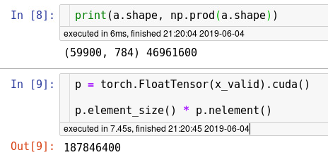
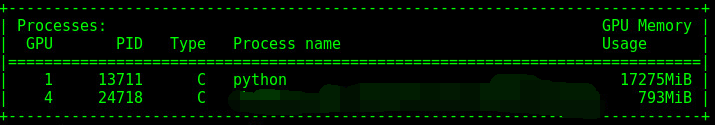
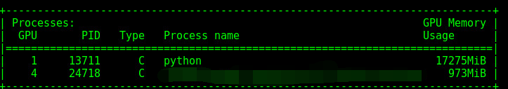

复现¶
CuDNN When running on the CuDNN backend, two further options must be set:
torch.backends.cudnn.deterministic = True
torch.backends.cudnn.benchmark = False
如：
def set_framework_seed(seed, debug=False):
if debug:
torch.backends.cudnn.deterministic = True
torch.backends.cudnn.benchmark = False
random.seed(seed)
np.random.seed(seed)
_ = torch.manual_seed(seed)
if torch.cuda.is_available():
_ = torch.cuda.manual_seed(seed)
函数里的内存占用不释放¶
比如, 使用的函数
def pairwise_distances(x, y=None):
"""
Input: x is a Nxd matrix
y is an optional Mxd matrix
Output: dist is a NxM matrix where dist[i,j] is the square norm between x[i,:] and y[j,:]
if y is not given then use 'y=x'.
i.e. dist[i,j] = ||x[i,:]-y[j,:]||^2
"""
n = x.size(0)
d = x.size(1)
if y is None:
y = x
m = y.size(0)
x_expand = x.unsqueeze(1).expand(n, m, d)
y_expand = y.unsqueeze(0).expand(n, m, d)
dist = torch.pow(x_expand - y_expand, 2).sum(2).cpu()
return dist
如果不在倒数第二行使用 .cpu()， 经常出现，函数返回后，占用的GPU内存不被释放, 有时是覆盖掉，有时干脆累加， 分分钟撑爆GPU内存
torch 1.0/0.4.1¶
libtorch_python.so: undefined symbol: _Z11libshm_initPKc
When I installed the torch 1.0, there's a libshm.so in the $LD_LIBRARY_PATH.
Just remove the path from $LD_LIBRARY_PATH, and reinstall.
安装torch时， 之前因某原因（不记得）给LD_LIBRARY_PATH多加了一个带libshm.so文件的路径， 导致torch加载版本不对， 删掉路径， 刷新LD_LIBRARY_PATH， 重装 torch即可。
初始化权重¶
因为PyTorch初始化不是使用 numpy， 与其他框架跨框架比较时， 需要使用 numpy 来初始化， 才能一致。
def normal_(tensor, mean=0, std=1):
with torch.no_grad():
return tensor.normal_(mean, std)
使用方法：
model.apply(weight_init)
对非scalar求导¶
grad on non-scalar/tensor
torch.autograd.grad(f_x[:, 0], logits, grad_outputs=torch.ones_like(f_x[:, 0]))
BatchNorm affine¶
It seems TF/chainer most frameworks works with affine=False(affine = True will introduce some randomness)
不知道为什么， TF/CHAINER等框架的batchnorm 都是固定的， 就PyTorch 默认有随机。
different momentum¶
PyTorch的momentum实现和别的不太一样。。。最终效果应该接近， 但训练过程中， 损失值会匹配不上， 对用不同框架重现会造成一小点困惑。
PyTorch uses:
v = ρ * v + g
p = p − lr * v
Other frameworks may use:
v = ρ * v + lr * g
p = p − v
or
v = ρ * v + lr * (1 - ρ) g
p = p − v
Memory usage¶
初始状态， 仅向GPU传入一个tensor， 占用内存如下


传入第二个tensor后：

实际占用内存数约为：
$(973 - 793) * 1024 * 1024 = 188743680 \approx 187846400$
所以， 有大约 $(793-180) =613$MB 内存被初始化占用。
device-side error¶
好像就是除了0